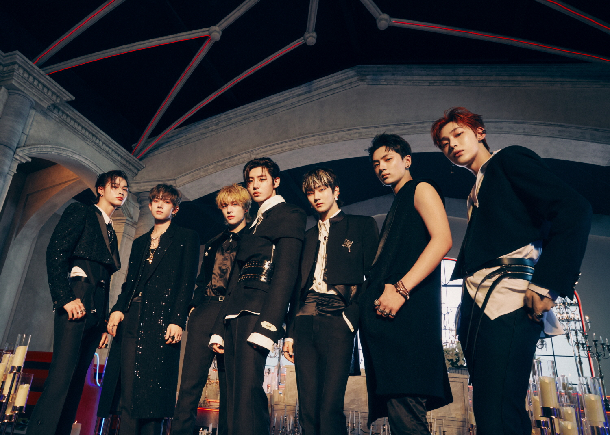

Debut: 2020-11-30
Member's: JUNGWON, HEESEUNG, JAY, JAKE, SUNGHOON, SUNOO, NI-KI
ENHYPEN is the first boyband created by BELIFT LAB, consisting of seven multinational members JUNGWON, HEESEUNG, JAY, JAKE, SUNGHOON, SUNOO and NI-KI. They are the finalists of global music competition show ‘I-LAND,’ which finished airing in September 2020. The members have already shown infinite possibilities and growth not only as individuals, but also as a team. Similar to the ‘hyphen(-)’ that connects one word to another, ENHYPEN means that seven different boys connect to discover one another and grow together. It also indicates their ambitious plan to connect people and the world through their music.
Awards
2020
The Fact Music Awards
Next Leader Award
2021
Asia Artist Awards
Rookie of the Year - Music
Best Artist Award - Music
Asian Pop Music Awards
Best New Artist (overseas)
Mnet Asian Music Awards
Best New Male Artist
Worldwide Fan's Choice Top 10
Melon Music Awards
Global Rising Artist Awards
Golden Disc Music Awards
Rookie Artist of the Year
Album Bonsang
Gaon Chart Music Awards
World Rookie of the Year
2022
Gaon Chart Music Awards
World Rookie of the Year
Golden Disc Music Awards
Album Bonsang
Japenese Golden Disc Award
New Artist of the Year (Asia)
Best 3 New Artists (Asia)
Melon Music Awards
1thek Global Icon
Mnet Music Award
Worldwide Fans' Choice Top 10
Ten Asia Global Top 10 Awards
Best Artist First Half of 2022 - Malaysia
Best Artist First Half of 2022 - Philippines